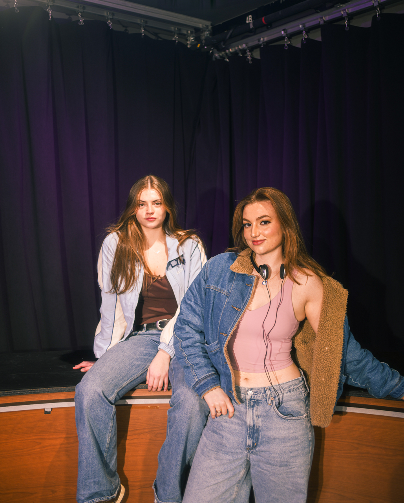
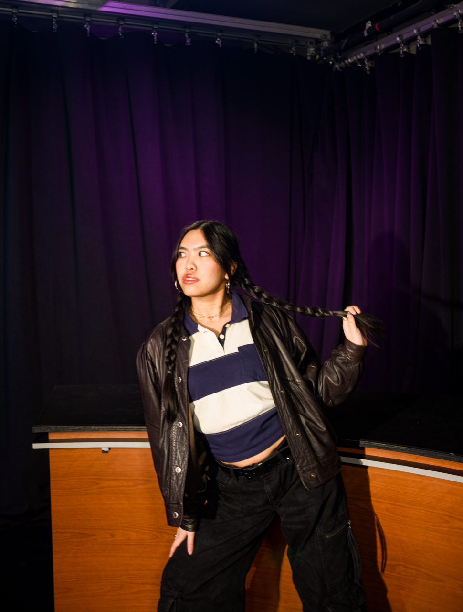
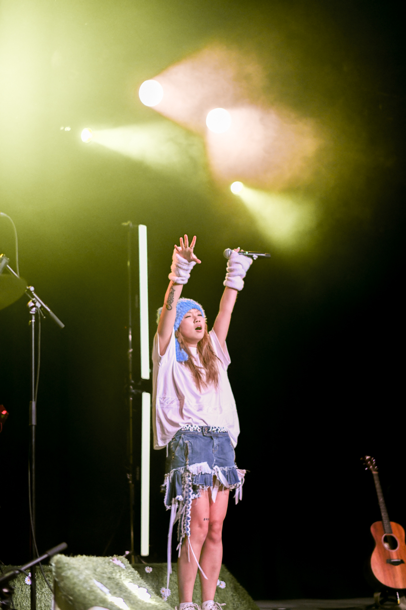

Welcome to Tiffany's Photography Snippet - How I started
A little about photography and me!
Photography represents empowerment and a reflection of our daily lives, passions, and creativity.
I started photography in late sophomore year when I borrowed my dad's camera one day on a beach trip.
My name is Tiffany T. Nguyen and I am currently a senior at Northeastern University Boston, studying business and a minor in data science.
I strive to be creative and analytical through my academic and personal life, and photography is a core example of this belief.
As I have been self-taught for approximately 6 years, I had opportunities to photograph across the Bay Area, NYC, and Boston.
My recent work includes portraits, graduation photography, engagements, dance showcases, digitals for models, couples shoots, prom, and more!
Growing up, I wasn't very confident in myself but photography allowed me to empower myself and others.
No matter where I move post-grad, I hope to continue my photography journey and grow my artistic style, individuality, and uplifting of others.
Everyone has various styles as a photographer including your shooting style, editing style, lens, color grading, camera choice, and more.
There is not "right" or "wrong" in photography, as the photos are a reflection of how you see the world and the stories you wish to tell.
Everyone always starts from somewhere, and I never knew my photography journey would take me on so many adventures!
See below!



The photos above are just a glimpse into my creativity!
Interested? Contact Me!
Contact me at tiffanyn3544@gmail.com for any questions!
Send email